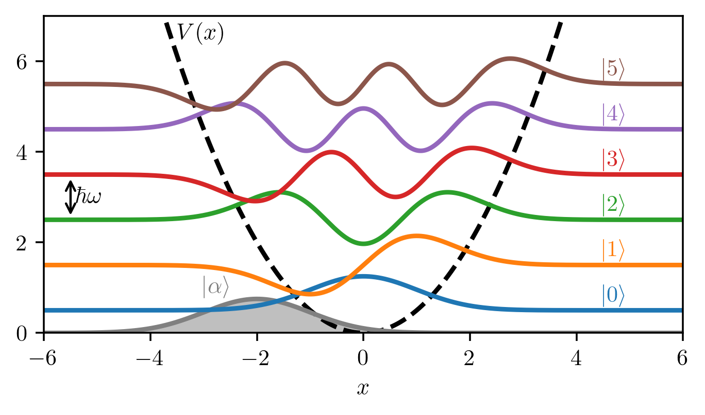

As an example, here we consider the quantum harmonic oscillator. Classically, the harmonic oscillator is defined as a system subject to the force \(\mathbf{F} = - k \mathbf{r}\), where \(k\) is the elastic constant. In other words, the force is proportional to the displacement from a stable point (in this case the origin).
Following the relation \(\mathbf{F} = - \nabla V(\mathbf{r})\), we can say that the corresponding potential is \(V(\mathbf{r}) = k/2 \ \mathbf{r}^2\). The solution of the Schrodinger equation
where \(\hbar\) is the reduced Planck constant, \(m\) is the mass of the particle, and \(\nabla^2\) is the Laplacian operator, gives us the eigenstates of the system. Considering only the one-dimensional case, we obtain the following eigenstates for the quantum harmonic oscillator:
note that the position \(\hat{x}\) and conjugate momentum \(\hat{p}\) are operators too. If we now write the eigenstates in Equation 5.1 in the bra-ket notation (\(\psi_n \to \ket{n}\)), the ladder operators allow us to move from one eigenstate to the next or previous one:
and it is straightforward to recognize the creation (\(\hat{a}^\dagger\)) and annihilation (\(\hat{a}\)) operators. In this framework the system Hamiltonian of the quantum harmonic oscillator becomes \[
\hat{H} = \hbar \omega \left( \hat{a}^\dagger \hat{a} + \frac{1}{2} \right) \, .
\]
Code
import numpy as npimport matplotlib.pyplot as pltfrom scipy.special import eval_hermite, factorial# Physical parametersm =1.0k =1.0w = np.sqrt(k/m)alpha =-np.sqrt(2) # coherent‐state parameter# Gridbounds =6.0x = np.linspace(-bounds, bounds, 1000)# n-th eigenfunction of the HO (hbar=1)def psi(n, x): Hn = eval_hermite(n, np.sqrt(m*w) * x) norm = (m*w/np.pi)**0.25/ np.sqrt(2**n * factorial(n))return norm * Hn * np.exp(-m*w*x**2/2)# Build the first six eigenstates and energiespsi_n = [psi(n, x) for n inrange(6)]E_n = [(n +0.5) * w for n inrange(6)]# Coherent-state wavefunction (real alpha ⇒ no overall phase)psi_coh = (m*w/np.pi)**0.25* np.exp(- (x - np.sqrt(2)*alpha)**2/2)# Plottingfig, ax = plt.subplots()# 1) potentialax.plot(x, 0.5*k*x**2, 'k--', lw=2, label=r'$V(x)=\tfrac12 k x^2$')# 2) coherent stateax.fill_between(x, psi_coh, color='gray', alpha=0.5)ax.plot(x, psi_coh, color='gray', lw=2, label='Coherent state')# 3) eigenstates offset by E_nlines = []for n inrange(6): y = psi_n[n] + E_n[n] line, = ax.plot(x, y, lw=2, label=fr'$|{n}\rangle$') lines.append(line)# Cosmeticsax.set_ylim(0, 7)ax.set_xlabel(r'$x$')# State labels on the rightfor n, line inenumerate(lines): ax.text(4.5, E_n[n] +0.2, rf'$|{n}\rangle$', color=line.get_color())ax.text(-3.5, 6.5, r"$V(x)$")ax.text(-3, 0.9, r"$\ket{\alpha}$", color="grey")ax.annotate("", xy=(-5.5,3.5), xytext=(-5.5,2.5), arrowprops=dict(arrowstyle="<->"))ax.text(-5.4, 3, r"$\hbar \omega$", ha="left", va="center")plt.show()

Figure A.1: First eigenstates of one-dimensional the quantum harmonic oscillator, each of them vertically shifted by the corresponding eigenvalue. The grey-filled curve corresponds to a coherent state with \(\alpha=-\sqrt{2}\). The used parameter are \(m=1\), \(\omega=1\), and \(\hbar=1\).
It is worth introducing the coherent state \(\ket{\alpha}\) of the harmonic oscillator, defined as the eigenstate of the destroy operator, with eigenvalue \(\alpha\), in other words, \(\hat{a} \ket{\alpha} = \alpha \ket{\alpha}\). It can be expressed analytically in terms of the eigenstates of the quantum harmonic oscillator \[
\begin{aligned}
\ket{\alpha} = e^{-\frac{1}{2} \abs{\alpha}^2} \sum_{n=0}^{\infty} \frac{\alpha^n}{\sqrt{n!}} \ket{n} \, ,
\end{aligned}
\]
and it can be seen as the most classic-like state since it has the minimum uncertainty \(\Delta x \Delta p = \hbar / 2\).
Figure A.1 shows the first eigenstates of the quantum harmonic oscillator, each of them vertically shifted by the respective energy, while the grey-filled curve is a coherent state with \(\alpha = - \sqrt{2}\). The black dashed curve is the potential, choosing \(k = 1\), \(m = 1\), and \(\hbar = 1\). It is worth noting that also the groundstate \(\ket{0}\) has a nonzero energy (\(E_0 = \hbar \omega / 2\)).